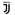

Serie A

| League level: | First Tier - Italy |
|---|---|
| Number of teams: | 20 teams |
| Players: | 595 |
| Foreigners: | 354 Players 59.5% |
| -Market value: | 8.65m |
| UEFA coefficient: | 3. Pos. 64.724 Points |
|---|---|
| Record-holding champions: | Juventus FC 36 time(s) |
| -Age: | 26.8 Years |
| Reigning champion: | Juventus FC |


1.Matchday
| Home | Result | Away | ||||
|---|---|---|---|---|---|---|
| Sat 8/24/196:00 PM | ||||||
| (11.) Parma |  |
0:1 |  | Juventus (1.) | ||
| 8:45 PM | ||||||
| (10.) Fiorentina |  |
3:4 |  |
SSC Napoli (7.) | ||
| Sun 8/25/196:00 PM | ||||||
| (13.) Udinese Calcio | 1:0 | AC Milan (6.) | ||||
| 8:45 PM | ||||||
| (14.) Cagliari Calcio | 0:1 | Brescia (19.) | ||||
| (9.) Hellas Verona | 1:1 |  |
Bologna (12.) | |||
| (5.) AS Roma | 3:3 | Genoa (17.) | ||||
| (15.) Sampdoria | 0:3 | Lazio (4.) | ||||
| (20.) SPAL |  |
2:3 | Atalanta (3.) | |||
| (16.) Torino | 2:1 | Sassuolo (8.) | ||||
| Mon 8/26/198:45 PM | ||||||
| (2.) Inter |  |
4:0 | Lecce (18.) | |||
2.Matchday
| Home | Result | Away | ||||
|---|---|---|---|---|---|---|
| Fri 8/30/198:45 PM | ||||||
| (11.) Bologna | |
1:0 | |
SPAL (14.) | ||
| Sat 8/31/196:00 PM | ||||||
| (17.) AC Milan | 1:0 | Brescia (6.) | ||||
| 8:45 PM | ||||||
| (7.) Juventus | 4:3 | |
SSC Napoli (3.) | |||
| Sun 9/1/196:00 PM | ||||||
| (2.) Lazio | 1:1 | AS Roma (10.) | ||||
| 8:45 PM | ||||||
| (4.) Atalanta | 2:3 | Torino (5.) | ||||
| (16.) Cagliari Calcio | 1:2 | |
Inter (1.) | |||
| (9.) Genoa | 2:1 | |
Fiorentina (13.) | |||
| (20.) Lecce | 0:1 | Hellas Verona (12.) | ||||
| (15.) Sassuolo | 4:1 | Sampdoria (19.) | ||||
| (8.) Udinese Calcio | 1:3 | |
Parma (18.) | |||
3.Matchday
| Home | Result | Away | ||||
|---|---|---|---|---|---|---|
| Sat 9/14/193:00 PM | ||||||
| (16.) Fiorentina | |
0:0 | Juventus (2.) | |||
| 6:00 PM | ||||||
| (9.) SSC Napoli | |
2:0 | Sampdoria (20.) | |||
| 8:45 PM | ||||||
| (1.) Inter | |
1:0 | Udinese Calcio (13.) | |||
| Sun 9/15/1912:30 PM | ||||||
| (5.) Genoa | 1:2 | Atalanta (10.) | ||||
| 3:00 PM | ||||||
| (14.) Brescia | 3:4 | |
Bologna (6.) | |||
| (11.) Parma | |
1:3 | Cagliari Calcio (18.) | |||
| (17.) SPAL | |
2:1 | Lazio (4.) | |||
| 6:00 PM | ||||||
| (15.) AS Roma | 4:2 | Sassuolo (8.) | ||||
| 8:45 PM | ||||||
| (7.) Hellas Verona | 0:1 | AC Milan (12.) | ||||
| Mon 9/16/198:45 PM | ||||||
| (3.) Torino | 1:2 | Lecce (19.) | ||||
4.Matchday
| Home | Result | Away | ||||
|---|---|---|---|---|---|---|
| Fri 9/20/198:45 PM | ||||||
| (15.) Cagliari Calcio | 3:1 | Genoa (10.) | ||||
| Sat 9/21/193:00 PM | ||||||
| (18.) Udinese Calcio | 0:1 | Brescia (16.) | ||||
| 6:00 PM | ||||||
| (3.) Juventus | 2:1 | Hellas Verona (11.) | ||||
| 8:45 PM | ||||||
| (5.) AC Milan | 0:2 | |
Inter (1.) | |||
| Sun 9/22/1912:30 PM | ||||||
| (12.) Sassuolo | 3:0 | |
SPAL (13.) | |||
| 3:00 PM | ||||||
| (2.) Bologna | |
1:2 | AS Roma (8.) | |||
| (14.) Lecce | 1:4 | |
SSC Napoli (4.) | |||
| (20.) Sampdoria | 1:0 | Torino (6.) | ||||
| 6:00 PM | ||||||
| (7.) Atalanta | 2:2 | |
Fiorentina (19.) | |||
| 8:45 PM | ||||||
| (9.) Lazio | 2:0 | |
Parma (17.) | |||
5.Matchday
| Home | Result | Away | ||||
|---|---|---|---|---|---|---|
| Tue 9/24/197:00 PM | ||||||
| (13.) Hellas Verona | 0:0 | Udinese Calcio (19.) | ||||
| 9:00 PM | ||||||
| (11.) Brescia | 1:2 | Juventus (2.) | ||||
| Wed 9/25/197:00 PM | ||||||
| (4.) AS Roma | 0:2 | Atalanta (6.) | ||||
| 9:00 PM | ||||||
| (20.) Fiorentina | |
2:1 | Sampdoria (17.) | |||
| (14.) Genoa | 0:0 | |
Bologna (7.) | |||
| (1.) Inter | |
1:0 | Lazio (5.) | |||
| (3.) SSC Napoli | |
0:1 | Cagliari Calcio (9.) | |||
| (18.) Parma | |
1:0 | Sassuolo (8.) | |||
| (15.) SPAL | |
1:3 | Lecce (16.) | |||
| Thu 9/26/199:00 PM | ||||||
| (10.) Torino | 2:1 | AC Milan (12.) | ||||
6.Matchday
| Home | Result | Away | ||||
|---|---|---|---|---|---|---|
| Sat 9/28/193:00 PM | ||||||
| (2.) Juventus | 2:0 | |
SPAL (19.) | |||
| 6:00 PM | ||||||
| (20.) Sampdoria | 1:3 | |
Inter (1.) | |||
| 8:45 PM | ||||||
| (10.) Sassuolo | 1:4 | Atalanta (3.) | ||||
| Sun 9/29/1912:30 PM | ||||||
| (6.) SSC Napoli | |
2:1 | Brescia (11.) | |||
| 3:00 PM | ||||||
| (9.) Lazio | 4:0 | Genoa (16.) | ||||
| (14.) Lecce | 0:1 | AS Roma (7.) | ||||
| (18.) Udinese Calcio | 1:0 | |
Bologna (8.) | |||
| 6:00 PM | ||||||
| (5.) Cagliari Calcio | 1:1 | Hellas Verona (15.) | ||||
| 8:45 PM | ||||||
| (13.) AC Milan | 1:3 | |
Fiorentina (17.) | |||
| Mon 9/30/198:45 PM | ||||||
| (12.) Parma | |
3:2 | Torino (4.) | |||
7.Matchday
| Home | Result | Away | ||||
|---|---|---|---|---|---|---|
| Sat 10/5/193:00 PM | ||||||
| (19.) SPAL | |
1:0 | |
Parma (8.) | ||
| 6:00 PM | ||||||
| (15.) Hellas Verona | 2:0 | Sampdoria (20.) | ||||
| 8:45 PM | ||||||
| (18.) Genoa | 1:2 | AC Milan (14.) | ||||
| Sun 10/6/1912:30 PM | ||||||
| (10.) Fiorentina | |
1:0 | Udinese Calcio (12.) | |||
| 3:00 PM | ||||||
| (3.) Atalanta | 3:1 | Lecce (17.) | ||||
| (11.) Bologna | |
2:2 | Lazio (6.) | |||
| (5.) AS Roma | 1:1 | Cagliari Calcio (7.) | ||||
| 6:00 PM | ||||||
| (9.) Torino | 0:0 | |
SSC Napoli (4.) | |||
| 8:45 PM | ||||||
| (1.) Inter | |
1:2 | Juventus (2.) | |||
| Wed 12/18/198:45 PM | ||||||
| (16.) Brescia | 0:2 | Sassuolo (13.) | ||||
8.Matchday
| Home | Result | Away | ||||
|---|---|---|---|---|---|---|
| Sat 10/19/193:00 PM | ||||||
| (6.) Lazio | 3:3 | Atalanta (3.) | ||||
| 6:00 PM | ||||||
| (4.) SSC Napoli | |
2:0 | Hellas Verona (13.) | |||
| 8:45 PM | ||||||
| (1.) Juventus | 2:1 | |
Bologna (12.) | |||
| Sun 10/20/1912:30 PM | ||||||
| (14.) Sassuolo | 3:4 | |
Inter (2.) | |||
| 3:00 PM | ||||||
| (7.) Cagliari Calcio | 2:0 | |
SPAL (18.) | |||
| (20.) Sampdoria | 0:0 | AS Roma (5.) | ||||
| (15.) Udinese Calcio | 1:0 | Torino (9.) | ||||
| 6:00 PM | ||||||
| (11.) Parma | |
5:1 | Genoa (19.) | |||
| 8:45 PM | ||||||
| (10.) AC Milan | 2:2 | Lecce (17.) | ||||
| Mon 10/21/199:00 PM | ||||||
| (16.) Brescia | 0:0 | |
Fiorentina (8.) | |||
9.Matchday
| Home | Result | Away | ||||
|---|---|---|---|---|---|---|
| Fri 10/25/198:45 PM | ||||||
| (15.) Hellas Verona | 0:1 | Sassuolo (13.) | ||||
| Sat 10/26/193:00 PM | ||||||
| (17.) Lecce | 1:1 | Juventus (1.) | ||||
| 6:00 PM | ||||||
| (2.) Inter | |
2:2 | |
Parma (9.) | ||
| 8:45 PM | ||||||
| (19.) Genoa | 3:1 | Brescia (16.) | ||||
| Sun 10/27/1912:30 PM | ||||||
| (14.) Bologna | |
2:1 | Sampdoria (20.) | |||
| 3:00 PM | ||||||
| (3.) Atalanta | 7:1 | Udinese Calcio (10.) | ||||
| (18.) SPAL | |
1:1 | |
SSC Napoli (4.) | ||
| (11.) Torino | 1:1 | Cagliari Calcio (5.) | ||||
| 6:00 PM | ||||||
| (6.) AS Roma | 2:1 | AC Milan (12.) | ||||
| 8:45 PM | ||||||
| (7.) Fiorentina | |
1:2 | Lazio (8.) | |||
10.Matchday
| Home | Result | Away | ||||
|---|---|---|---|---|---|---|
| Tue 10/29/197:00 PM | ||||||
| (8.) Parma | |
0:1 | Hellas Verona (15.) | |||
| 9:00 PM | ||||||
| (18.) Brescia | 1:2 | |
Inter (2.) | |||
| Wed 10/30/197:00 PM | ||||||
| (4.) SSC Napoli | |
2:2 | Atalanta (3.) | |||
| 9:00 PM | ||||||
| (7.) Cagliari Calcio | 3:2 | |
Bologna (11.) | |||
| (1.) Juventus | 2:1 | Genoa (17.) | ||||
| (6.) Lazio | 4:0 | Torino (12.) | ||||
| (20.) Sampdoria | 1:1 | Lecce (16.) | ||||
| (9.) Sassuolo | 1:2 | |
Fiorentina (10.) | |||
| (13.) Udinese Calcio | 0:4 | AS Roma (5.) | ||||
| Thu 10/31/199:00 PM | ||||||
| (14.) AC Milan | 1:0 | |
SPAL (19.) | |||
11.Matchday
| Home | Result | Away | ||||
|---|---|---|---|---|---|---|
| Sat 11/2/193:00 PM | ||||||
| (4.) AS Roma | 2:1 | |
SSC Napoli (7.) | |||
| 6:00 PM | ||||||
| (12.) Bologna | |
1:2 | |
Inter (2.) | ||
| 8:45 PM | ||||||
| (14.) Torino | 0:1 | Juventus (1.) | ||||
| Sun 11/3/1912:30 PM | ||||||
| (3.) Atalanta | 0:2 | Cagliari Calcio (6.) | ||||
| 3:00 PM | ||||||
| (17.) Genoa | 1:3 | Udinese Calcio (15.) | ||||
| (13.) Hellas Verona | 2:1 | Brescia (18.) | ||||
| (16.) Lecce | 2:2 | Sassuolo (11.) | ||||
| 6:00 PM | ||||||
| (8.) Fiorentina | |
1:1 | |
Parma (9.) | ||
| 8:45 PM | ||||||
| (10.) AC Milan | 1:2 | Lazio (5.) | ||||
| Mon 11/4/198:45 PM | ||||||
| (19.) SPAL | |
0:1 | Sampdoria (20.) | |||
12.Matchday
| Home | Result | Away | ||||
|---|---|---|---|---|---|---|
| Fri 11/8/198:45 PM | ||||||
| (11.) Sassuolo | 3:1 | |
Bologna (14.) | |||
| Sat 11/9/193:00 PM | ||||||
| (19.) Brescia | 0:4 | Torino (15.) | ||||
| 6:00 PM | ||||||
| (2.) Inter | |
2:1 | Hellas Verona (9.) | |||
| 8:45 PM | ||||||
| (7.) SSC Napoli | |
0:0 | Genoa (17.) | |||
| Sun 11/10/1912:30 PM | ||||||
| (4.) Cagliari Calcio | 5:2 | |
Fiorentina (8.) | |||
| 3:00 PM | ||||||
| (5.) Lazio | 4:2 | Lecce (16.) | ||||
| (18.) Sampdoria | 0:0 | Atalanta (6.) | ||||
| (12.) Udinese Calcio | 0:0 | |
SPAL (20.) | |||
| 6:00 PM | ||||||
| (10.) Parma | |
2:0 | AS Roma (3.) | |||
| 8:45 PM | ||||||
| (1.) Juventus | 1:0 | AC Milan (13.) | ||||
13.Matchday
| Home | Result | Away | ||||
|---|---|---|---|---|---|---|
| Sat 11/23/193:00 PM | ||||||
| (5.) Atalanta | 1:3 | Juventus (1.) | ||||
| 6:00 PM | ||||||
| (14.) AC Milan | 1:1 | |
SSC Napoli (7.) | |||
| 8:45 PM | ||||||
| (13.) Torino | 0:3 | |
Inter (2.) | |||
| Sun 11/24/1912:30 PM | ||||||
| (15.) Bologna | |
2:2 | |
Parma (8.) | ||
| 3:00 PM | ||||||
| (11.) Hellas Verona | 1:0 | |
Fiorentina (9.) | |||
| (6.) AS Roma | 3:0 | Brescia (20.) | ||||
| (10.) Sassuolo | 1:2 | Lazio (3.) | ||||
| 6:00 PM | ||||||
| (18.) Sampdoria | 2:1 | Udinese Calcio (12.) | ||||
| Mon 11/25/193:00 PM | ||||||
| (16.) Lecce | 2:2 | Cagliari Calcio (4.) | ||||
| 8:45 PM | ||||||
| (19.) SPAL | |
1:1 | Genoa (17.) | |||
14.Matchday
| Home | Result | Away | ||||
|---|---|---|---|---|---|---|
| Sat 11/30/193:00 PM | ||||||
| (20.) Brescia | 0:3 | Atalanta (6.) | ||||
| 6:00 PM | ||||||
| (18.) Genoa | 0:1 | Torino (13.) | ||||
| 8:45 PM | ||||||
| (10.) Fiorentina | |
0:1 | Lecce (17.) | |||
| Sun 12/1/1912:30 PM | ||||||
| (1.) Juventus | 2:2 | Sassuolo (11.) | ||||
| 3:00 PM | ||||||
| (2.) Inter | |
2:1 | |
SPAL (19.) | ||
| (3.) Lazio | 3:0 | Udinese Calcio (12.) | ||||
| (9.) Parma | |
0:1 | AC Milan (14.) | |||
| 6:00 PM | ||||||
| (7.) SSC Napoli | |
1:2 | |
Bologna (15.) | ||
| 8:45 PM | ||||||
| (8.) Hellas Verona | 1:3 | AS Roma (5.) | ||||
| Mon 12/2/198:45 PM | ||||||
| (4.) Cagliari Calcio | 4:3 | Sampdoria (16.) | ||||
15.Matchday
| Home | Result | Away | ||||
|---|---|---|---|---|---|---|
| Fri 12/6/198:45 PM | ||||||
| (1.) Inter | |
0:0 | AS Roma (5.) | |||
| Sat 12/7/193:00 PM | ||||||
| (6.) Atalanta | 3:2 | Hellas Verona (8.) | ||||
| 6:00 PM | ||||||
| (16.) Udinese Calcio | 1:1 | |
SSC Napoli (7.) | |||
| 8:45 PM | ||||||
| (3.) Lazio | 3:1 | Juventus (2.) | ||||
| Sun 12/8/1912:30 PM | ||||||
| (15.) Lecce | 2:2 | Genoa (18.) | ||||
| 3:00 PM | ||||||
| (11.) Sassuolo | 2:2 | Cagliari Calcio (4.) | ||||
| (19.) SPAL | |
0:1 | Brescia (20.) | |||
| (10.) Torino | 2:1 | |
Fiorentina (14.) | |||
| 6:00 PM | ||||||
| (17.) Sampdoria | 0:1 | |
Parma (9.) | |||
| 8:45 PM | ||||||
| (13.) Bologna | |
2:3 | AC Milan (12.) | |||
16.Matchday
| Home | Result | Away | ||||
|---|---|---|---|---|---|---|
| Sat 12/14/193:00 PM | ||||||
| (19.) Brescia | 3:0 | Lecce (15.) | ||||
| 6:30 PM | ||||||
| (7.) SSC Napoli | |
1:2 | |
Parma (8.) | ||
| 8:45 PM | ||||||
| (18.) Genoa | 0:1 | Sampdoria (17.) | ||||
| Sun 12/15/1912:30 PM | ||||||
| (12.) Hellas Verona | 3:3 | Torino (9.) | ||||
| 3:00 PM | ||||||
| (13.) Bologna | |
2:1 | Atalanta (6.) | |||
| (2.) Juventus | 3:1 | Udinese Calcio (16.) | ||||
| (10.) AC Milan | 0:0 | Sassuolo (11.) | ||||
| 6:00 PM | ||||||
| (5.) AS Roma | 3:1 | |
SPAL (20.) | |||
| 8:45 PM | ||||||
| (14.) Fiorentina | |
1:1 | |
Inter (1.) | ||
| Mon 12/16/198:45 PM | ||||||
| (4.) Cagliari Calcio | 1:2 | Lazio (3.) | ||||
17.Matchday
| Home | Result | Away | ||||
|---|---|---|---|---|---|---|
| Wed 12/18/196:55 PM | ||||||
| (15.) Sampdoria | 1:2 | Juventus (1.) | ||||
| Fri 12/20/198:45 PM | ||||||
| (14.) Fiorentina | |
1:4 | AS Roma (4.) | |||
| Sat 12/21/193:00 PM | ||||||
| (17.) Udinese Calcio | 2:1 | Cagliari Calcio (5.) | ||||
| 6:00 PM | ||||||
| (2.) Inter | |
4:0 | Genoa (19.) | |||
| 8:45 PM | ||||||
| (8.) Torino | 1:2 | |
SPAL (20.) | |||
| Sun 12/22/1912:30 PM | ||||||
| (6.) Atalanta | 5:0 | AC Milan (10.) | ||||
| 3:00 PM | ||||||
| (16.) Lecce | 2:3 | |
Bologna (13.) | |||
| (7.) Parma | |
1:1 | Brescia (18.) | |||
| 8:45 PM | ||||||
| (11.) Sassuolo | 1:2 | |
SSC Napoli (9.) | |||
| Wed 2/5/208:45 PM | ||||||
| (3.) Lazio | 0:0 | Hellas Verona (12.) | ||||
18.Matchday
| Home | Result | Away | ||||
|---|---|---|---|---|---|---|
| Sun 1/5/2012:30 PM | ||||||
| (18.) Brescia | 1:2 | Lazio (3.) | ||||
| 3:00 PM | ||||||
| (19.) SPAL | |
0:2 | Hellas Verona (12.) | |||
| 6:00 PM | ||||||
| (20.) Genoa | 2:1 | Sassuolo (13.) | ||||
| 8:45 PM | ||||||
| (4.) AS Roma | 0:2 | Torino (10.) | ||||
| Mon 1/6/2012:30 PM | ||||||
| (9.) Bologna | |
1:1 | |
Fiorentina (15.) | ||
| 3:00 PM | ||||||
| (5.) Atalanta | 5:0 | |
Parma (7.) | |||
| (1.) Juventus | 4:0 | Cagliari Calcio (6.) | ||||
| (11.) AC Milan | 0:0 | Sampdoria (17.) | ||||
| 6:00 PM | ||||||
| (16.) Lecce | 0:1 | Udinese Calcio (14.) | ||||
| 8:45 PM | ||||||
| (8.) SSC Napoli | |
1:3 | |
Inter (2.) | ||
19.Matchday
| Home | Result | Away | ||||
|---|---|---|---|---|---|---|
| Sat 1/11/203:00 PM | ||||||
| (6.) Cagliari Calcio | 0:2 | AC Milan (12.) | ||||
| 6:00 PM | ||||||
| (3.) Lazio | 1:0 | |
SSC Napoli (8.) | |||
| 8:45 PM | ||||||
| (2.) Inter | |
1:1 | Atalanta (5.) | |||
| Sun 1/12/2012:30 PM | ||||||
| (13.) Udinese Calcio | 3:0 | Sassuolo (14.) | ||||
| 3:00 PM | ||||||
| (15.) Fiorentina | |
1:0 | |
SPAL (20.) | ||
| (16.) Sampdoria | 5:1 | Brescia (19.) | ||||
| (9.) Torino | 1:0 | |
Bologna (10.) | |||
| 6:00 PM | ||||||
| (11.) Hellas Verona | 2:1 | Genoa (18.) | ||||
| 8:45 PM | ||||||
| (4.) AS Roma | 1:2 | Juventus (1.) | ||||
| Mon 1/13/208:45 PM | ||||||
| (7.) Parma | |
2:0 | Lecce (17.) | |||
20.Matchday
| Home | Result | Away | ||||
|---|---|---|---|---|---|---|
| Sat 1/18/203:00 PM | ||||||
| (3.) Lazio | 5:1 | Sampdoria (16.) | ||||
| 6:00 PM | ||||||
| (15.) Sassuolo | 2:1 | Torino (8.) | ||||
| 8:45 PM | ||||||
| (11.) SSC Napoli | |
0:2 | |
Fiorentina (14.) | ||
| Sun 1/19/2012:30 PM | ||||||
| (10.) AC Milan | 3:2 | Udinese Calcio (12.) | ||||
| 3:00 PM | ||||||
| (19.) Brescia | 2:2 | Cagliari Calcio (6.) | ||||
| (13.) Bologna | |
1:1 | Hellas Verona (9.) | |||
| (17.) Lecce | 1:1 | |
Inter (2.) | |||
| 6:00 PM | ||||||
| (18.) Genoa | 1:3 | AS Roma (5.) | ||||
| 8:45 PM | ||||||
| (1.) Juventus | 2:1 | |
Parma (7.) | |||
| Mon 1/20/208:45 PM | ||||||
| (4.) Atalanta | 1:2 | |
SPAL (20.) | |||
21.Matchday
| Home | Result | Away | ||||
|---|---|---|---|---|---|---|
| Fri 1/24/208:45 PM | ||||||
| (18.) Brescia | 0:1 | AC Milan (7.) | ||||
| Sat 1/25/203:00 PM | ||||||
| (19.) SPAL | |
1:3 | |
Bologna (12.) | ||
| 6:00 PM | ||||||
| (11.) Fiorentina | |
0:0 | Genoa (20.) | |||
| 8:45 PM | ||||||
| (9.) Torino | 0:7 | Atalanta (5.) | ||||
| Sun 1/26/2012:30 PM | ||||||
| (2.) Inter | |
1:1 | Cagliari Calcio (6.) | |||
| 3:00 PM | ||||||
| (10.) Hellas Verona | 3:0 | Lecce (17.) | ||||
| (16.) Sampdoria | 0:0 | Sassuolo (15.) | ||||
| (8.) Parma | |
2:0 | Udinese Calcio (13.) | |||
| 6:00 PM | ||||||
| (4.) AS Roma | 1:1 | Lazio (3.) | ||||
| 8:45 PM | ||||||
| (14.) SSC Napoli | |
2:1 | Juventus (1.) | |||
22.Matchday
| Home | Result | Away | ||||
|---|---|---|---|---|---|---|
| Sat 2/1/203:00 PM | ||||||
| (11.) Bologna | |
2:1 | Brescia (19.) | |||
| 6:00 PM | ||||||
| (7.) Cagliari Calcio | 2:2 | |
Parma (8.) | |||
| 8:45 PM | ||||||
| (15.) Sassuolo | 4:2 | AS Roma (4.) | ||||
| Sun 2/2/2012:30 PM | ||||||
| (1.) Juventus | 3:0 | |
Fiorentina (13.) | |||
| 3:00 PM | ||||||
| (5.) Atalanta | 2:2 | Genoa (18.) | ||||
| (6.) AC Milan | 1:1 | Hellas Verona (9.) | ||||
| (3.) Lazio | 5:1 | |
SPAL (20.) | |||
| 6:00 PM | ||||||
| (17.) Lecce | 4:0 | Torino (10.) | ||||
| 8:45 PM | ||||||
| (14.) Udinese Calcio | 0:2 | |
Inter (2.) | |||
| Mon 2/3/208:45 PM | ||||||
| (16.) Sampdoria | 2:4 | |
SSC Napoli (12.) | |||
23.Matchday
| Home | Result | Away | ||||
|---|---|---|---|---|---|---|
| Fri 2/7/208:45 PM | ||||||
| (5.) AS Roma | 2:3 | |
Bologna (10.) | |||
| Sat 2/8/203:00 PM | ||||||
| (14.) Fiorentina | |
1:2 | Atalanta (4.) | |||
| 6:00 PM | ||||||
| (12.) Torino | 1:3 | Sampdoria (16.) | ||||
| 8:45 PM | ||||||
| (9.) Hellas Verona | 2:1 | Juventus (1.) | ||||
| Sun 2/9/2012:30 PM | ||||||
| (20.) SPAL | |
1:2 | Sassuolo (13.) | |||
| 3:00 PM | ||||||
| (18.) Genoa | 1:0 | Cagliari Calcio (7.) | ||||
| (11.) SSC Napoli | |
2:3 | Lecce (17.) | |||
| (19.) Brescia | 1:1 | Udinese Calcio (15.) | ||||
| 6:00 PM | ||||||
| (8.) Parma | |
0:1 | Lazio (3.) | |||
| 8:45 PM | ||||||
| (2.) Inter | |
4:2 | AC Milan (6.) | |||
24.Matchday
| Home | Result | Away | ||||
|---|---|---|---|---|---|---|
| Sat 2/15/203:00 PM | ||||||
| (17.) Lecce | 2:1 | |
SPAL (20.) | |||
| 6:00 PM | ||||||
| (7.) Bologna | |
0:3 | Genoa (18.) | |||
| 8:45 PM | ||||||
| (4.) Atalanta | 2:1 | AS Roma (5.) | ||||
| Sun 2/16/2012:30 PM | ||||||
| (15.) Udinese Calcio | 0:0 | Hellas Verona (6.) | ||||
| 3:00 PM | ||||||
| (1.) Juventus | 2:0 | Brescia (19.) | ||||
| (16.) Sampdoria | 1:5 | |
Fiorentina (14.) | |||
| (12.) Sassuolo | 0:1 | |
Parma (10.) | |||
| 6:00 PM | ||||||
| (9.) Cagliari Calcio | 0:1 | |
SSC Napoli (11.) | |||
| 8:45 PM | ||||||
| (3.) Lazio | 2:1 | |
Inter (2.) | |||
| Mon 2/17/208:45 PM | ||||||
| (8.) AC Milan | 1:0 | Torino (13.) | ||||
25.Matchday
| Home | Result | Away | ||||
|---|---|---|---|---|---|---|
| Fri 2/21/208:45 PM | ||||||
| (19.) Brescia | 1:2 | |
SSC Napoli (10.) | |||
| Sat 2/22/203:00 PM | ||||||
| (9.) Bologna | |
1:1 | Udinese Calcio (15.) | |||
| 6:00 PM | ||||||
| (20.) SPAL | |
1:2 | Juventus (1.) | |||
| 8:45 PM | ||||||
| (13.) Fiorentina | |
1:1 | AC Milan (6.) | |||
| Sun 2/23/2012:30 PM | ||||||
| (18.) Genoa | 2:3 | Lazio (2.) | ||||
| 6:00 PM | ||||||
| (5.) AS Roma | 4:0 | Lecce (16.) | ||||
| Sat 6/20/207:30 PM | ||||||
| (14.) Torino | 1:1 | |
Parma (8.) | |||
| 9:45 PM | ||||||
| (7.) Hellas Verona | 2:1 | Cagliari Calcio (11.) | ||||
| Sun 6/21/207:30 PM | ||||||
| (4.) Atalanta | 4:1 | Sassuolo (12.) | ||||
| 9:45 PM | ||||||
| (3.) Inter | |
2:1 | Sampdoria (17.) | |||
26.Matchday
| Home | Result | Away | ||||
|---|---|---|---|---|---|---|
| Sat 2/29/203:00 PM | ||||||
| (2.) Lazio | 2:0 | |
Bologna (10.) | |||
| 8:45 PM | ||||||
| (9.) SSC Napoli | |
2:1 | Torino (14.) | |||
| Sun 3/1/203:00 PM | ||||||
| (16.) Lecce | 2:7 | Atalanta (4.) | ||||
| 6:00 PM | ||||||
| (11.) Cagliari Calcio | 3:4 | AS Roma (5.) | ||||
| Sun 3/8/201:45 PM | ||||||
| (8.) Parma | |
0:1 | |
SPAL (20.) | ||
| 3:00 PM | ||||||
| (7.) AC Milan | 1:2 | Genoa (18.) | ||||
| (17.) Sampdoria | 2:1 | Hellas Verona (6.) | ||||
| 6:00 PM | ||||||
| (15.) Udinese Calcio | 0:0 | |
Fiorentina (12.) | |||
| 8:45 PM | ||||||
| (1.) Juventus | 2:0 | |
Inter (3.) | |||
| Mon 3/9/206:30 PM | ||||||
| (13.) Sassuolo | 3:0 | Brescia (19.) | ||||
27.Matchday
| Home | Result | Away | ||||
|---|---|---|---|---|---|---|
| Mon 6/22/207:30 PM | ||||||
| (13.) Fiorentina | |
1:1 | Brescia (20.) | |||
| (18.) Lecce | 1:4 | AC Milan (8.) | ||||
| 9:45 PM | ||||||
| (10.) Bologna | |
0:2 | Juventus (1.) | |||
| Tue 6/23/207:30 PM | ||||||
| (19.) SPAL | |
0:1 | Cagliari Calcio (11.) | |||
| (7.) Hellas Verona | 0:2 | |
SSC Napoli (6.) | |||
| 9:45 PM | ||||||
| (17.) Genoa | 1:4 | |
Parma (9.) | |||
| (15.) Torino | 1:0 | Udinese Calcio (14.) | ||||
| Wed 6/24/207:30 PM | ||||||
| (3.) Inter | |
3:3 | Sassuolo (12.) | |||
| 9:45 PM | ||||||
| (4.) Atalanta | 3:2 | Lazio (2.) | ||||
| (5.) AS Roma | 2:1 | Sampdoria (16.) | ||||
28.Matchday
| Home | Result | Away | ||||
|---|---|---|---|---|---|---|
| Fri 6/26/209:45 PM | ||||||
| (1.) Juventus | 4:0 | Lecce (18.) | ||||
| Sat 6/27/205:15 PM | ||||||
| (20.) Brescia | 2:2 | Genoa (17.) | ||||
| 7:30 PM | ||||||
| (10.) Cagliari Calcio | 4:2 | Torino (13.) | ||||
| 9:45 PM | ||||||
| (2.) Lazio | 2:1 | |
Fiorentina (14.) | |||
| Sun 6/28/205:15 PM | ||||||
| (7.) AC Milan | 2:0 | AS Roma (5.) | ||||
| 7:30 PM | ||||||
| (15.) Udinese Calcio | 2:3 | Atalanta (4.) | ||||
| (16.) Sampdoria | 1:2 | |
Bologna (11.) | |||
| (12.) Sassuolo | 3:3 | Hellas Verona (9.) | ||||
| (6.) SSC Napoli | |
3:1 | |
SPAL (19.) | ||
| 9:45 PM | ||||||
| (8.) Parma | |
1:2 | |
Inter (3.) | ||
29.Matchday
| Home | Result | Away | ||||
|---|---|---|---|---|---|---|
| Tue 6/30/207:30 PM | ||||||
| (13.) Torino | 1:2 | Lazio (2.) | ||||
| 9:45 PM | ||||||
| (17.) Genoa | 1:3 | Juventus (1.) | ||||
| Wed 7/1/207:30 PM | ||||||
| (3.) Inter | |
6:0 | Brescia (19.) | |||
| (11.) Bologna | |
1:1 | Cagliari Calcio (10.) | |||
| 9:45 PM | ||||||
| (20.) SPAL | |
2:2 | AC Milan (7.) | |||
| (8.) Hellas Verona | 3:2 | |
Parma (9.) | |||
| (18.) Lecce | 1:2 | Sampdoria (16.) | ||||
| (14.) Fiorentina | |
1:3 | Sassuolo (12.) | |||
| Thu 7/2/207:30 PM | ||||||
| (4.) Atalanta | 2:0 | |
SSC Napoli (6.) | |||
| 9:45 PM | ||||||
| (5.) AS Roma | 0:2 | Udinese Calcio (15.) | ||||
30.Matchday
| Home | Result | Away | ||||
|---|---|---|---|---|---|---|
| Sat 7/4/205:15 PM | ||||||
| (1.) Juventus | 4:1 | Torino (13.) | ||||
| 7:30 PM | ||||||
| (12.) Sassuolo | 4:2 | Lecce (18.) | ||||
| 9:45 PM | ||||||
| (2.) Lazio | 0:3 | AC Milan (7.) | ||||
| Sun 7/5/205:15 PM | ||||||
| (3.) Inter | |
1:2 | |
Bologna (11.) | ||
| 7:30 PM | ||||||
| (9.) Cagliari Calcio | 0:1 | Atalanta (4.) | ||||
| (10.) Parma | |
1:2 | |
Fiorentina (14.) | ||
| (15.) Udinese Calcio | 2:2 | Genoa (17.) | ||||
| (20.) Brescia | 2:0 | Hellas Verona (8.) | ||||
| (16.) Sampdoria | 3:0 | |
SPAL (19.) | |||
| 9:45 PM | ||||||
| (6.) SSC Napoli | |
2:1 | AS Roma (5.) | |||
31.Matchday
| Home | Result | Away | ||||
|---|---|---|---|---|---|---|
| Tue 7/7/207:30 PM | ||||||
| (18.) Lecce | 2:1 | Lazio (2.) | ||||
| 9:45 PM | ||||||
| (7.) AC Milan | 4:2 | Juventus (1.) | ||||
| Wed 7/8/207:30 PM | ||||||
| (13.) Fiorentina | |
0:0 | Cagliari Calcio (11.) | |||
| (17.) Genoa | 1:2 | |
SSC Napoli (6.) | |||
| 9:45 PM | ||||||
| (16.) Torino | 3:1 | Brescia (19.) | ||||
| (5.) AS Roma | 2:1 | |
Parma (12.) | |||
| (4.) Atalanta | 2:0 | Sampdoria (14.) | ||||
| (9.) Bologna | |
1:2 | Sassuolo (10.) | |||
| Thu 7/9/207:30 PM | ||||||
| (20.) SPAL | |
0:3 | Udinese Calcio (15.) | |||
| 9:45 PM | ||||||
| (8.) Hellas Verona | 2:2 | |
Inter (3.) | |||
32.Matchday
| Home | Result | Away | ||||
|---|---|---|---|---|---|---|
| Sat 7/11/205:15 PM | ||||||
| (2.) Lazio | 1:2 | Sassuolo (8.) | ||||
| 7:30 PM | ||||||
| (19.) Brescia | 0:3 | AS Roma (5.) | ||||
| 9:45 PM | ||||||
| (1.) Juventus | 2:2 | Atalanta (3.) | ||||
| Sun 7/12/205:15 PM | ||||||
| (18.) Genoa | 2:0 | |
SPAL (20.) | |||
| 7:30 PM | ||||||
| (12.) Parma | |
2:2 | |
Bologna (10.) | ||
| (13.) Fiorentina | |
1:1 | Hellas Verona (9.) | |||
| (11.) Cagliari Calcio | 0:0 | Lecce (17.) | ||||
| (14.) Udinese Calcio | 1:3 | Sampdoria (16.) | ||||
| 9:45 PM | ||||||
| (6.) SSC Napoli | |
2:2 | AC Milan (7.) | |||
| Mon 7/13/209:45 PM | ||||||
| (4.) Inter | |
3:1 | Torino (15.) | |||
33.Matchday
| Home | Result | Away | ||||
|---|---|---|---|---|---|---|
| Tue 7/14/209:45 PM | ||||||
| (4.) Atalanta | 6:2 | Brescia (19.) | ||||
| Wed 7/15/207:30 PM | ||||||
| (14.) Sampdoria | 3:0 | Cagliari Calcio (11.) | ||||
| (10.) Bologna | |
1:1 | |
SSC Napoli (6.) | ||
| (7.) AC Milan | 3:1 | |
Parma (12.) | |||
| 9:45 PM | ||||||
| (18.) Lecce | 1:3 | |
Fiorentina (13.) | |||
| (5.) AS Roma | 2:1 | Hellas Verona (9.) | ||||
| (8.) Sassuolo | 3:3 | Juventus (1.) | ||||
| (15.) Udinese Calcio | 0:0 | Lazio (3.) | ||||
| Thu 7/16/207:30 PM | ||||||
| (16.) Torino | 3:0 | Genoa (17.) | ||||
| 9:45 PM | ||||||
| (20.) SPAL | |
0:4 | |
Inter (2.) | ||
34.Matchday
| Home | Result | Away | ||||
|---|---|---|---|---|---|---|
| Sat 7/18/205:15 PM | ||||||
| (9.) Hellas Verona | 1:1 | Atalanta (3.) | ||||
| 7:30 PM | ||||||
| (11.) Cagliari Calcio | 1:1 | Sassuolo (8.) | ||||
| 9:45 PM | ||||||
| (6.) AC Milan | 5:1 | |
Bologna (10.) | |||
| Sun 7/19/205:15 PM | ||||||
| (12.) Parma | |
2:3 | Sampdoria (14.) | |||
| 7:30 PM | ||||||
| (17.) Genoa | 2:1 | Lecce (18.) | ||||
| (19.) Brescia | 2:1 | |
SPAL (20.) | |||
| (13.) Fiorentina | |
2:0 | Torino (15.) | |||
| (7.) SSC Napoli | |
2:1 | Udinese Calcio (16.) | |||
| 9:45 PM | ||||||
| (5.) AS Roma | 2:2 | |
Inter (2.) | |||
| Mon 7/20/209:45 PM | ||||||
| (1.) Juventus | 2:1 | Lazio (4.) | ||||
35.Matchday
| Home | Result | Away | ||||
|---|---|---|---|---|---|---|
| Tue 7/21/207:30 PM | ||||||
| (3.) Atalanta | 1:0 | |
Bologna (10.) | |||
| 9:45 PM | ||||||
| (8.) Sassuolo | 1:2 | AC Milan (6.) | ||||
| Wed 7/22/207:30 PM | ||||||
| (14.) Parma | |
2:1 | |
SSC Napoli (7.) | ||
| 9:45 PM | ||||||
| (18.) Lecce | 3:1 | Brescia (19.) | ||||
| (2.) Inter | |
0:0 | |
Fiorentina (12.) | ||
| (13.) Sampdoria | 1:2 | Genoa (17.) | ||||
| (15.) Torino | 1:1 | Hellas Verona (9.) | ||||
| (20.) SPAL | |
1:6 | AS Roma (5.) | |||
| Thu 7/23/207:30 PM | ||||||
| (16.) Udinese Calcio | 2:1 | Juventus (1.) | ||||
| 9:45 PM | ||||||
| (4.) Lazio | 2:1 | Cagliari Calcio (11.) | ||||
36.Matchday
| Home | Result | Away | ||||
|---|---|---|---|---|---|---|
| Fri 7/24/209:45 PM | ||||||
| (6.) AC Milan | 1:1 | Atalanta (2.) | ||||
| Sat 7/25/205:15 PM | ||||||
| (19.) Brescia | 1:2 | |
Parma (12.) | |||
| 7:30 PM | ||||||
| (17.) Genoa | 0:3 | |
Inter (3.) | |||
| 9:45 PM | ||||||
| (7.) SSC Napoli | |
2:0 | Sassuolo (8.) | |||
| Sun 7/26/205:15 PM | ||||||
| (11.) Bologna | |
3:2 | Lecce (18.) | |||
| 7:30 PM | ||||||
| (5.) AS Roma | 2:1 | |
Fiorentina (10.) | |||
| (9.) Hellas Verona | 1:5 | Lazio (4.) | ||||
| (20.) SPAL | |
1:1 | Torino (16.) | |||
| (13.) Cagliari Calcio | 0:1 | Udinese Calcio (15.) | ||||
| 9:45 PM | ||||||
| (1.) Juventus | 2:0 | Sampdoria (14.) | ||||
37.Matchday
| Home | Result | Away | ||||
|---|---|---|---|---|---|---|
| Tue 7/28/207:30 PM | ||||||
| (11.) Parma | |
1:2 | Atalanta (3.) | |||
| 9:45 PM | ||||||
| (2.) Inter | |
2:0 | |
SSC Napoli (7.) | ||
| Wed 7/29/207:30 PM | ||||||
| (4.) Lazio | 2:0 | Brescia (19.) | ||||
| (8.) Sassuolo | 5:0 | Genoa (17.) | ||||
| (13.) Udinese Calcio | 1:2 | Lecce (18.) | ||||
| (15.) Sampdoria | 1:4 | AC Milan (6.) | ||||
| (9.) Hellas Verona | 3:0 | |
SPAL (20.) | |||
| 9:45 PM | ||||||
| (12.) Fiorentina | |
4:0 | |
Bologna (10.) | ||
| (14.) Cagliari Calcio | 2:0 | Juventus (1.) | ||||
| (16.) Torino | 2:3 | AS Roma (5.) | ||||
38.Matchday
| Home | Result | Away | ||||
|---|---|---|---|---|---|---|
| Sat 8/1/206:00 PM | ||||||
| (19.) Brescia | 1:1 | Sampdoria (15.) | ||||
| 8:45 PM | ||||||
| (6.) AC Milan | 3:0 | Cagliari Calcio (13.) | ||||
| (3.) Atalanta | 0:2 | |
Inter (2.) | |||
| (7.) SSC Napoli | |
3:1 | Lazio (4.) | |||
| (1.) Juventus | 1:3 | AS Roma (5.) | ||||
| Sun 8/2/206:00 PM | ||||||
| (20.) SPAL | |
1:3 | |
Fiorentina (10.) | ||
| 8:45 PM | ||||||
| (17.) Genoa | 3:0 | Hellas Verona (9.) | ||||
| (18.) Lecce | 3:4 | |
Parma (11.) | |||
| (12.) Bologna | |
1:1 | Torino (16.) | |||
| (8.) Sassuolo | 0:1 | Udinese Calcio (14.) | ||||